Introduction to Version Control with Git
Version control with Git
Version control with Git
Understanding how changes accumulate, and how to collaborate without creating endless copies of files.
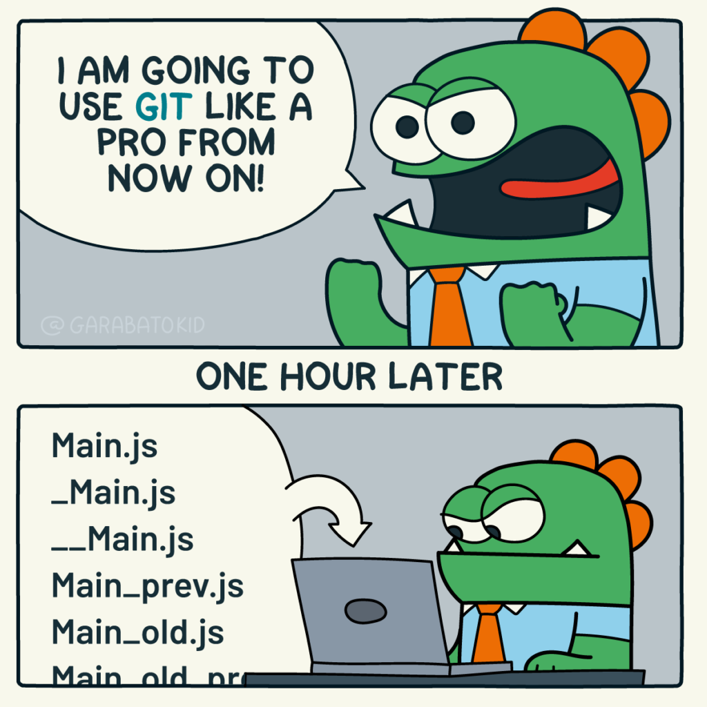
Overview
- Why Git
- What is Git
- How to use Git
Why Git?
Or any other version control software
Situation #1: Reviewing a draft document (offline)

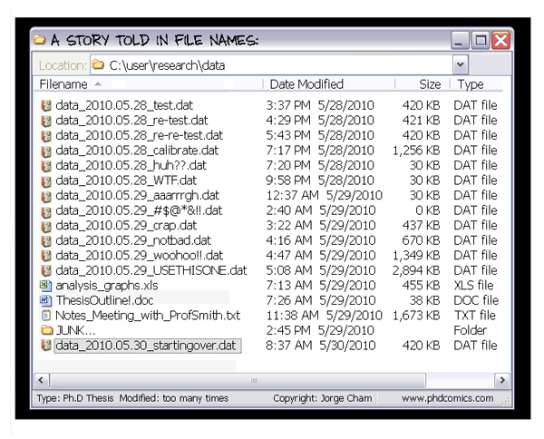
- Difficult to know which copy contains which change
- Repeated copies of the same information consume storage
Situation #2: A group coding project
Project copy #1
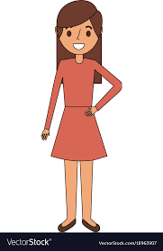
Alice
Project copy #2
Laura
Project copy #3
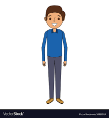
John
Situation #2: A group coding project
Project copy #1
Alice
Project copy #2
Laura
Project copy #3
John
Challenge: How to merge all these different copies together and maintain a final copy of the project?
Situation #2: A group coding project
Project copy #1
Alice
Project copy #2
Laura
Project copy #3
John
Challenge: How to merge all these different copies together and maintain a final copy of the project?
John makes his changes and sends his project to Laura
Situation #2: A group coding project
Project copy #1
Alice
Project copy #2
Laura
Project copy #3
John
Challenge: How to merge all these different copies together and maintain a final copy of the project?
John makes his changes and sends his project to Laura
Laura merges her changes and sends it to Alice
Situation #2: A group coding project
Project copy #1
Alice
Project copy #2
Laura
Project copy #3
John
Challenge: How to merge all these different copies together and maintain a final copy of the project?
John makes his changes and sends his project to Laura
Laura merges her changes and sends it to Alice
Alice merges her changes, reviews, and maintains the final copy
Situation #2: Consequences of this solution
- Manual approach
- Time consuming
- Error prone
- Not scalable
- Inefficient
Situation #2: Consequences of this solution
- Manual approach
- Time consuming
- Error prone
- Not scalable
- Inefficient
We need an efficient system that tracks different versions of a project, allowing the team to know who made changes, when, and why.
What is Git?
Mentimeter
What is Git? — Menti Poll
What do you already know about Git?
What is Git?
Git visual
- Git is the most used version control system. More than 90% of software projects around the world use Git.
- It was created in 2005 by Linus Torvalds, the same creator of Linux.
- It is free, open source, fast, and scalable.
These claims are carried over from the original slides and have not been independently fact-checked.
How to use Git?
The workshop of today!
Tools
- Unix terminal (Git Bash for Windows or WSL)
- Git
- Browser
- GitHub account
Schedule
| Time | Session |
|---|---|
| 09:30–09:45 | Git intro |
| 09:45–11:30 | Setting up a local Git repository |
| 14:30–14:45 | Break |
| 14:45–15:45 | Git cycle and ignoring things |
| 15:30–15:45 | Exercise |
| 15:45–16:00 | Break |
| 16:00–17:00 | Exploring history and concluding remarks |
By the end of this lesson, we expect to:
- Create a local Git repository
- Manage the history of changes to a file
- Understand Git terminology
- Set up a remote project
- Collaborate with other peers
Let’s start the lesson
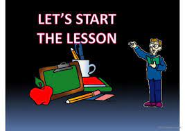
Let’s start the lesson graphic
The working directory, staging area and Git history
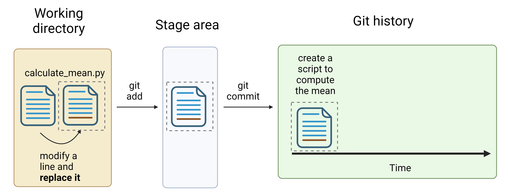
Diagram of working directory staging area and Git history
Tracked, staged and untracked files
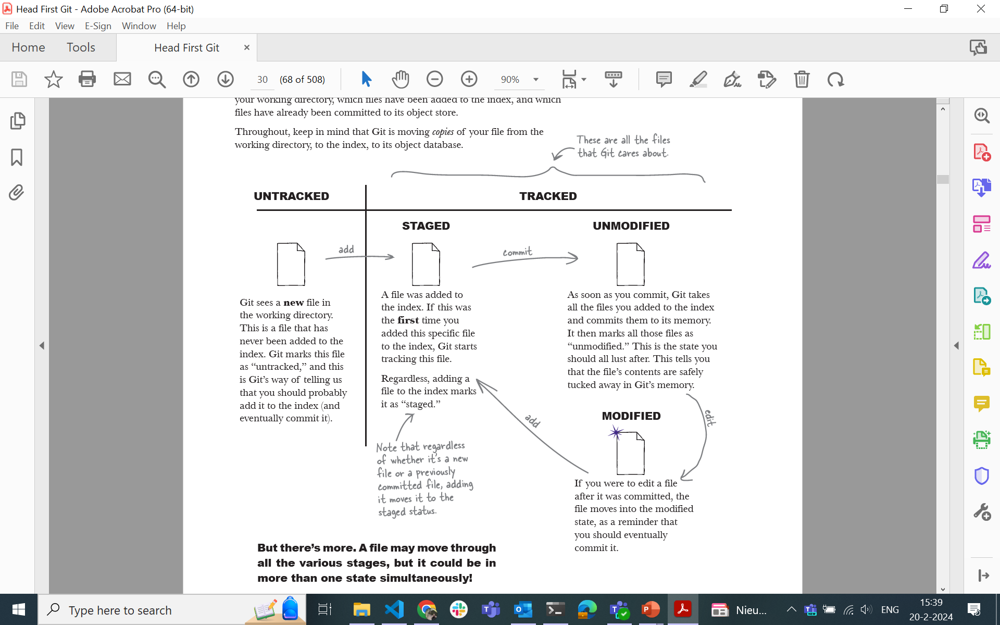
Head First Git explanation of tracked and staged files
Gandhi, R. (2022). Head First Git. O’Reilly Media.
Tracked, staged and untracked files (continued)
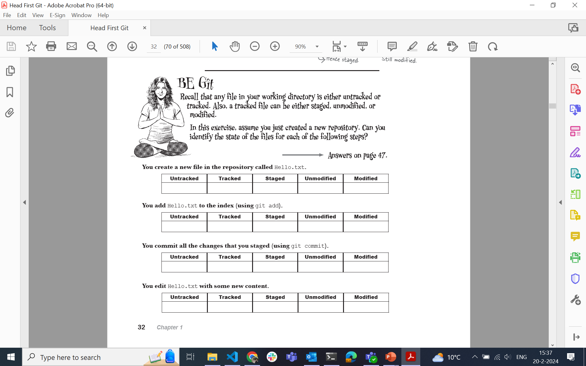
Head First Git reference figure
Gandhi, R. (2022). Head First Git. O’Reilly Media.
Working directory, staging area and Git history: status
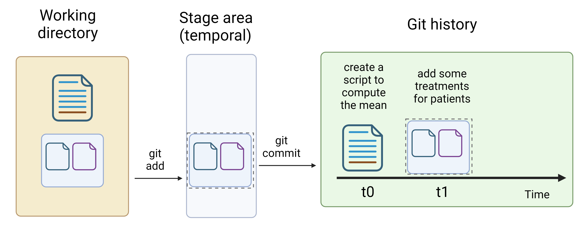
Git working directory staging and history status diagram
Git workflow across time
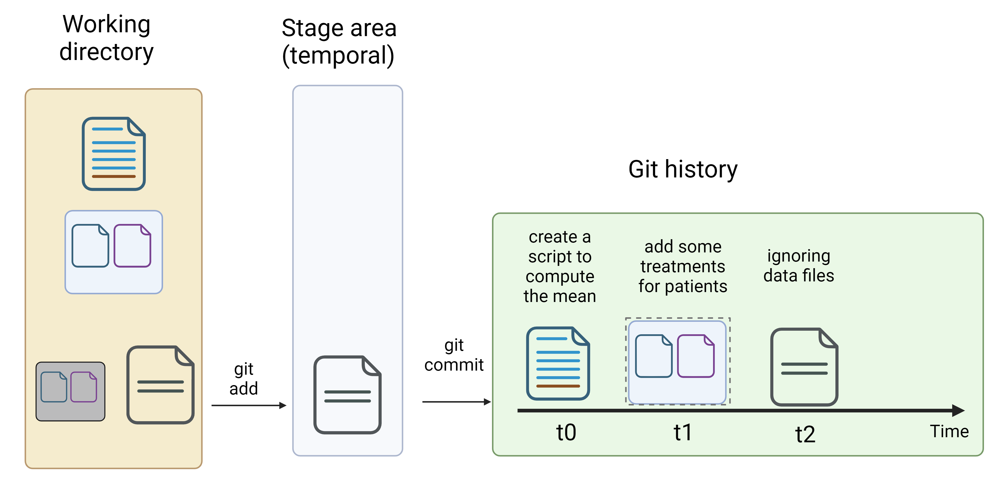
Expanded Git workflow diagram
git restore
git restore — described in the source presentation as the opposite of git add.
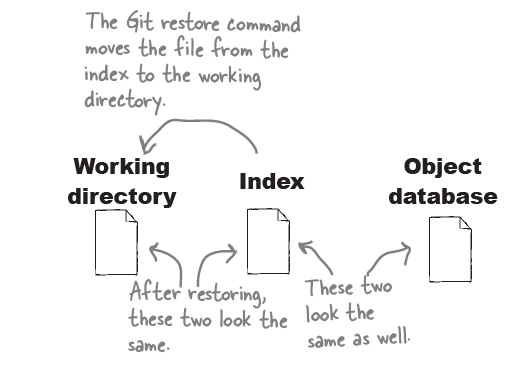
Git restore diagram
git restore –staged
git restore --staged — described in the source presentation as the opposite of git commit.
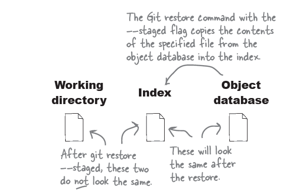
Git restore staged diagram